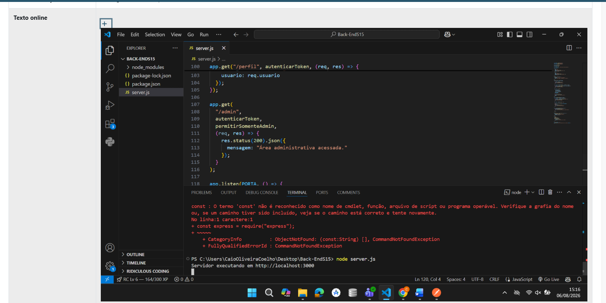
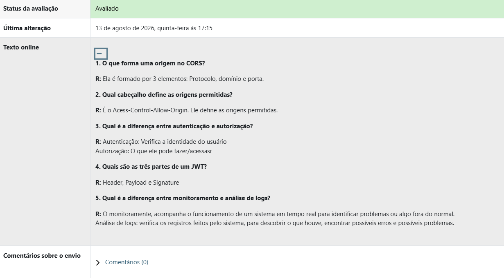
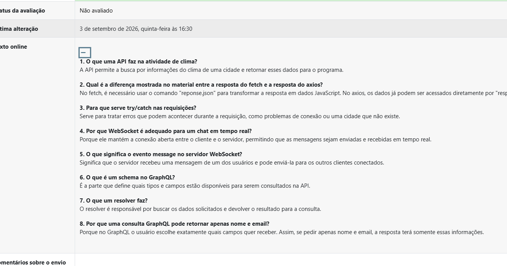
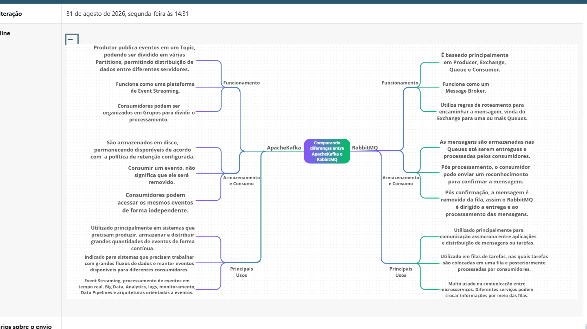
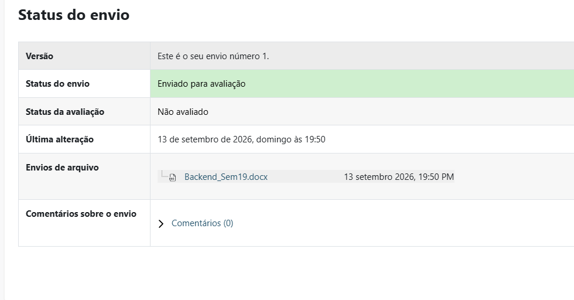
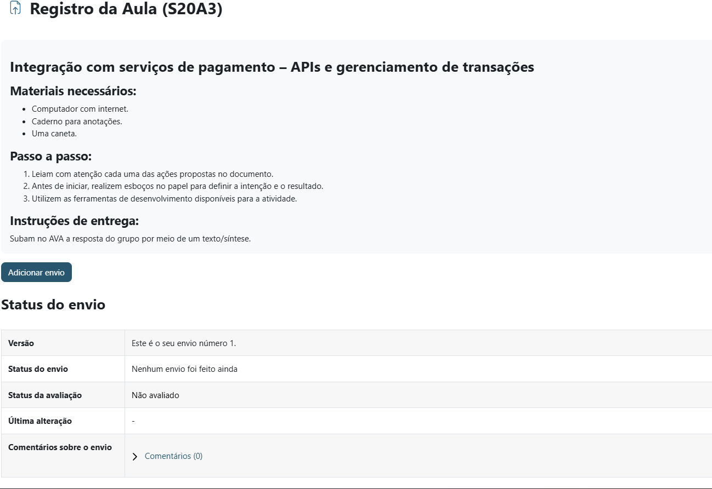
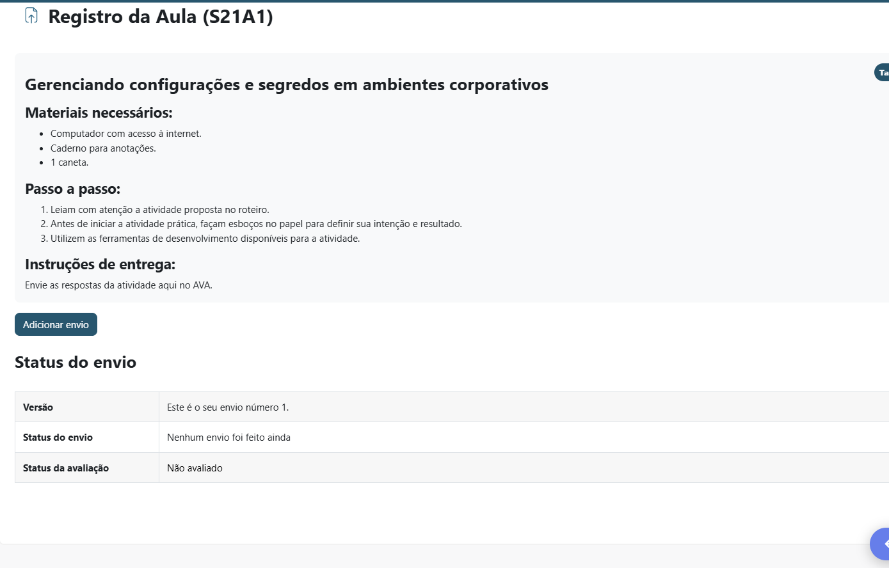

Back-End
Registro dos conteúdos e atividades desenvolvidos durante o 3° bimestre.
Resumo do que aprendi nesse bimestre
Aprendi mais sobre o funcionamento por trás de sites, a parte responsável pelos dados e como funcionam.
Semana 15
TEMA
Fundamentos de Servidores e Segurança
Evidência da atividade
Print da atividade da Semana 15:

Semana 16
TEMA
Configuração e Segurança de APIs
Evidência da atividade
Print da atividade da Semana 16:

Semana 17
TEMA
Introdução aos Frameworks e Integração
Evidência da atividade
Print da atividade da Semana 17:

Semana 18
TEMA
Desenvolvimento de Microsserviços e Mensageria
Evidência da atividade
Print da atividade da Semana 18:

Semana 19
TEMA
Servidores Web Avançados
Evidência da atividade
Print da atividade da Semana 19:

Semana 20
TEMA
Arquitetura Serverless e Pagamentos
Evidência da atividade
Print da atividade da Semana 20:

Semana 21
TEMA
Gestão de Configurações e Monitoramento
Evidência da atividade
Print da atividade da Semana 21:
